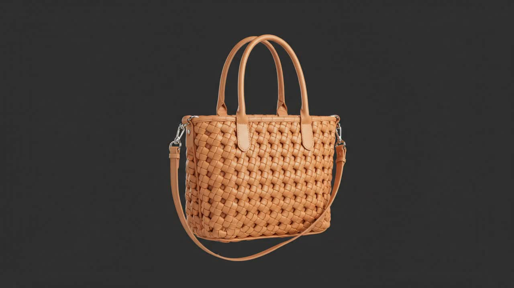
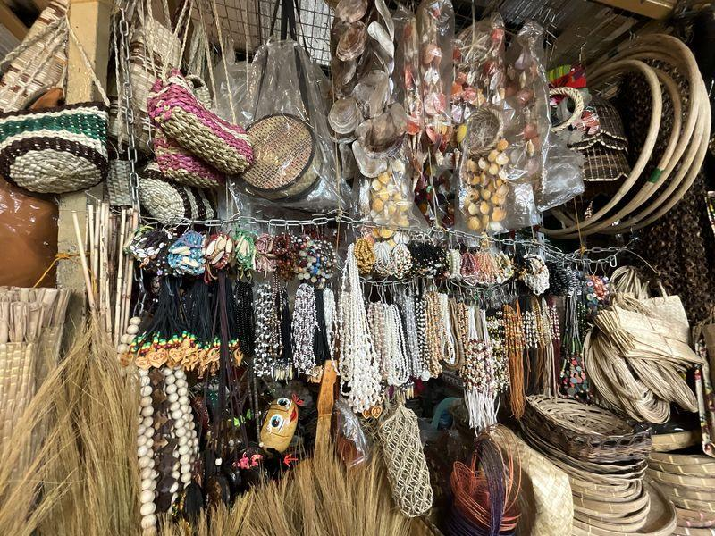
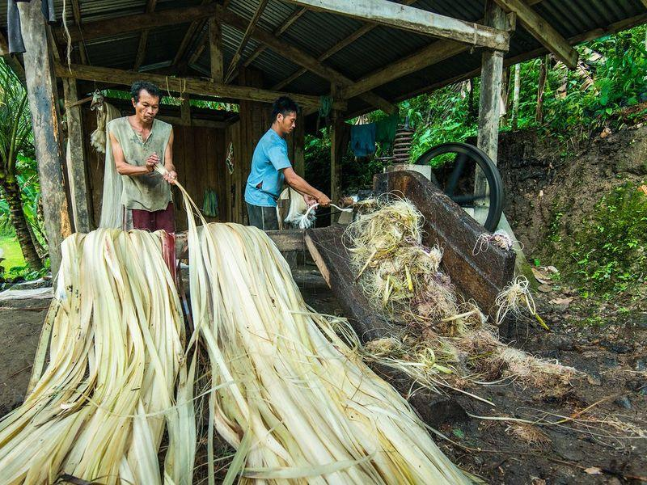
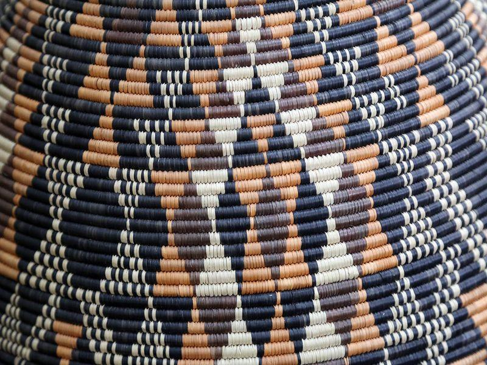

Handwoven in the Philippines
Every strand tells a story of where it was woven.
Abaca bags from Bicol, inabel from Ilocos, and banig from Samar, made by hand with weaving communities.
Woven by hand
Wide strips of sun-dried abaca, basket-woven over two days in a Bicol workshop.
Open it wide
Rolled handles and brushed-steel rings let the tote open to its full width.
A place for everything
Cotton-lined pockets keep your phone, keys, and market list within reach.
Every strand, a story.
Shop the Market ToteThe collection
Handwoven abaca bags, inabel & banig
-
Bestseller
Abaca · Catanduanes
Abaca Market Tote
Roomy everyday tote, hand-braided and lined with cotton.
₱1,450 -
Abaca · Albay
Abaca Evening Clutch
Structured clutch with a shell-button clasp.
₱980 -
New
Buri palm · Quezon
Buri Bayong Bag
The classic market bayong, refreshed with dyed accents.
₱720 -
Cotton · Ilocos Norte
Inabel Table Runner
Loom-woven binakul-style pattern in indigo and rust.
₱1,100 -
Pandan · Basey, Samar
Pandan Banig Mat
Hand-dyed sleeping mat that rolls up for storage.
₱1,850 -
Piña & silk · Kalibo, Aklan
Piña-Seda Scarf
Sheer, lightweight weave from pineapple-leaf fiber.
₱2,400
Where it's woven
Four regions, four weaving traditions
Each region works its own fiber with techniques passed down through families.
-
01
Bicol
Abaca fiber, stripped and dried by hand, braided into bags and accessories.
-
02
Ilocos
Inabel cotton weaving on wooden looms, known for its geometric patterns.
-
03
Samar
Banig mats woven from dyed pandan leaves in bold, colorful motifs.
-
04
Aklan
Piña cloth, a fine, sheer fabric made from pineapple-leaf fibers.
From fiber to market
The craft behind handwoven goods

Carbon Market, Cebu 
Processing abaca fiber 
Woven by hand, row by row
How it's made
From plant to product
- 01
Harvest
Fibers come from abaca, pandan, buri, and pineapple plants.
- 02
Strip & dry
Fibers are stripped, sun-dried, and sorted by hand.
- 03
Dye
Strands are colored, often with plant-based dyes.
- 04
Weave
Artisans braid or loom-weave each piece by hand.
The Hinabi journal
Stories from the loom, once a month
Maker profiles, care guides, and first access to new collections.